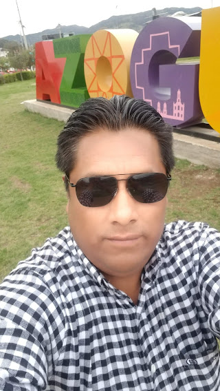
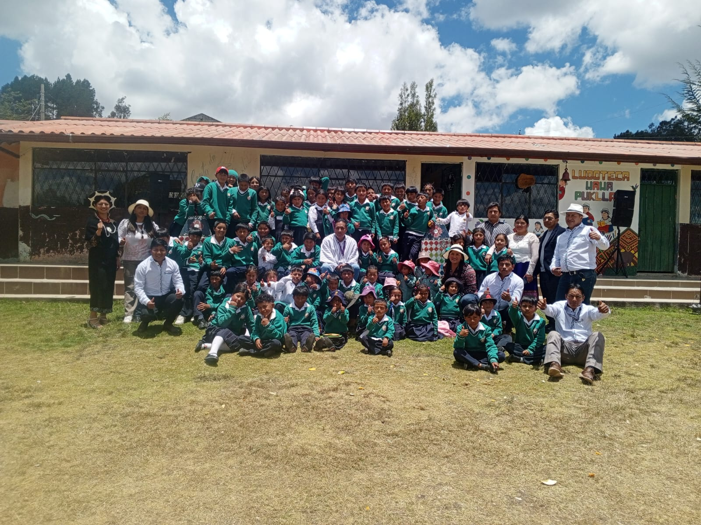
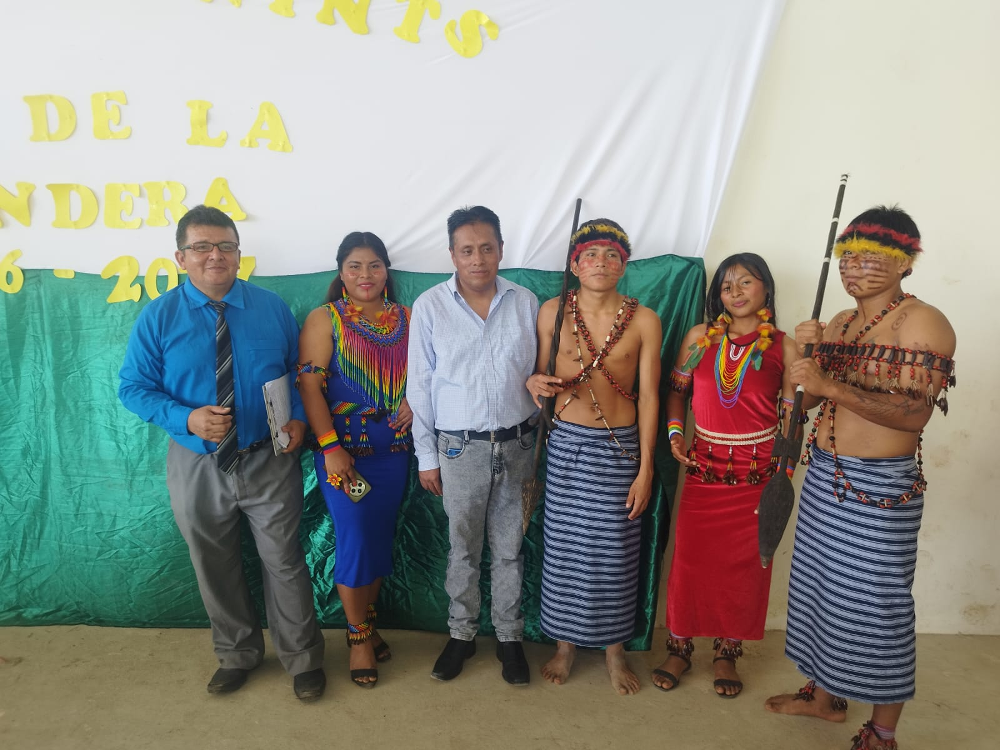
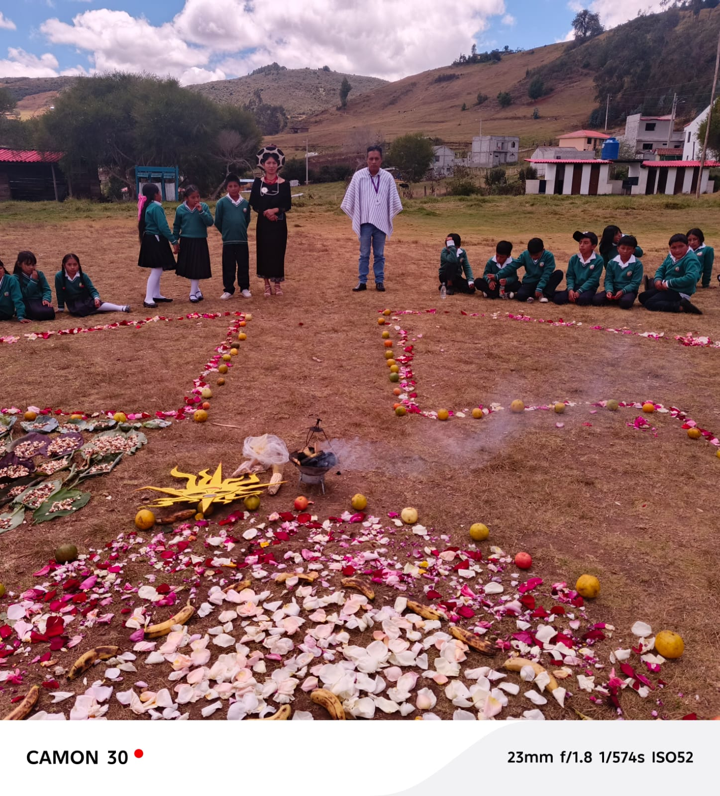
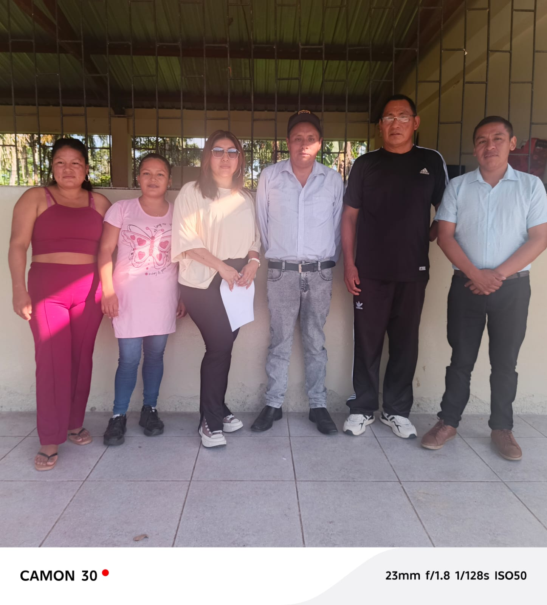
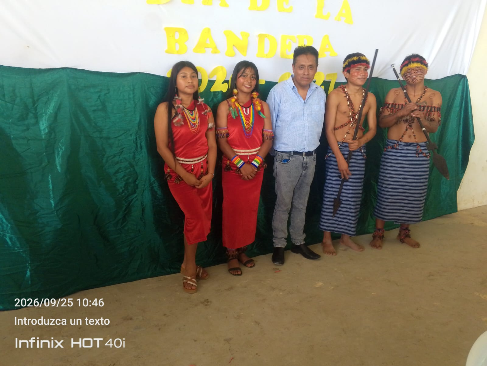

🧭
Acompañamiento territorial
Visitas a instituciones educativas para dialogar con directivos, docentes y comunidades, observar procesos y orientar acciones de mejora.
Director Zonal de Educación Intercultural Bilingüe de la Zona 6. Su trayectoria educativa, iniciada en el año 2000, articula docencia, gestión institucional, acompañamiento pedagógico y trabajo territorial con instituciones de Azuay, Cañar y Morona Santiago.

El portafolio reúne evidencias de acompañamiento a instituciones educativas, reflexiones sobre la práctica profesional, recursos de gestión pedagógica y una autoevaluación orientada a la mejora continua.
Visitas a instituciones educativas para dialogar con directivos, docentes y comunidades, observar procesos y orientar acciones de mejora.
Trabajo con los currículos Kichwa y Shuar, el MOSEIB y los procesos pedagógicos que permiten contextualizar la educación desde la lengua, la cultura y el territorio.
Coordinación con equipos pedagógicos y técnicos para sostener una gestión cercana, organizada y centrada en las necesidades de las instituciones.
“La educación intercultural bilingüe cobra sentido cuando la escuela reconoce la lengua, la memoria, los saberes y la vida comunitaria como parte del aprendizaje.”Declaración de filosofía profesional para este portafolio.
Las fotografías muestran momentos de visitas, encuentros, acompañamiento pedagógico y participación en actividades educativas y culturales.






Declaración profesional, principios pedagógicos y video-relato de un minuto.
Explorar →Línea de tiempo, responsabilidades actuales y galería del trabajo territorial.
Explorar →Materiales de acompañamiento, fortalezas, desafíos y metas de mejora.
Explorar →